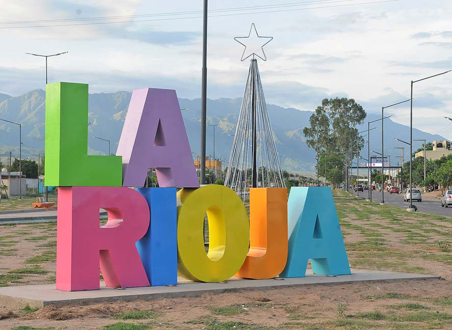

Destinos destacados
-
Tierra del Fuego
Está ubicada en la región patagónica, en el extremo sur de la Argentina, y ocupa un amplio territorio insular, marítimo y antártico, que se extiende desde la Isla Grande de Tierra del Fuego al polo Sur.
Más información y destinos -

Jujuy
provincia del remoto noroeste de Argentina, se caracteriza por sus espectaculares formaciones rocosas y colinas de la Quebrada de Huamahuaca. Este valle y sus aldeas quechuas se ubican en el norte de la capital provincial y el acceso regional, San Salvador de Jujuy. En el sur del valle, las laderas rocosas del icónico Cerro de los Siete Colores sobresalen de la villa colonial Purmamarca.
Más información y destinos -

La Rioja
Está ubicada en el noroeste del país, limitando al norte con Catamarca, al este con Córdoba, al sur con San Luis, al suroeste con San Juan y al noroeste con Chile, cuya frontera está determinada por la divisoria de aguas de la cordillera de los Andes.
Más información y destinos -

Mendoza
Mendoza es una ciudad de la región de Cuyo en Argentina y es el corazón de la zona vitivinícola argentina, famosa por sus Malbecs y otros vinos tintos.
Más información y destinos -

Misiones
Está ubicada en el noreste del país, en la región del Norte Grande Argentino, limitando al norte y este con los ríos Iguazú, San Antonio, Pepirí Guazú y Uruguay que la separan de Brasil,
Más información y destinos -

Cordoba
la capital de la provincia argentina de "cordoba", es conocida por su arquitectura colonial española y el campus original de la Universidad Nacional de Córdoba,la universidad más antiguas de Sudamérica
Más información y destinos